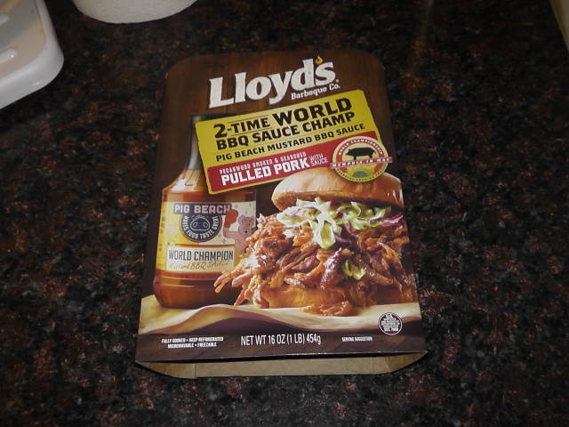
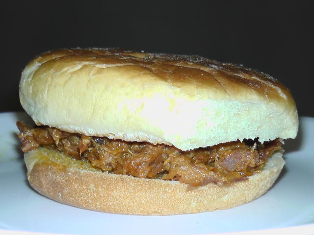

Hypochondria
Written 19 February, 2022
Hello, everyone, and welcome back to Cerracrossing!
So the other day at the store I came across this weirdly self-congratulatory package of Lloyd's BBQ pulled pork advertising its 2-time "world champion BBQ sauce", which we decided to buy.

I don't have much experience with barbecue, but I've had it in the south at least, so I think I've had good barbecue? lmao
So anyway we cooked it according to the instructions and after cooking and plating my sandwich looked like this!

It isn't the most appetizing, but pulled pork usually isn't when it comes to looks alone; the key is the taste!
Tasting it, it was actually better than I expected! The mustard sauce is definitely unique and it's not too strong but it's also pretty rich.
But, this is where the issue comes in :D
For the past couple of years I've developed severe anxiety and hypochondria specifically relating to food allergies!
Despite not being allergic to literally any food as far as I can tell, whenever I eat something new or something I don't eat often I tend to have an anxiety attack out of fear that I'll go into anaphylaxis!
This anxiety, combined with caffeine, lead to me having a panic attack last night! Luckily, after some sleep I was feeling (mostly) better. Some minor anxiety this morning, but nothing severe.
On another note this morning, I took this composite photo of Venus! It's really blurry but I think it looks pretty cool. ^^
For those who follow my work with Mr. Enter, I plan to (hopefully) record the answers to the Editors' Q&A with Kota sometime tomorrow; you can expect that fairly soon! :D
So, we come to the end of another blog! Like always, feel free to contact me at cerra.matthews@gmail.com, or join our Discord server linked on the homepage!
Cerra Matthews, signing off! B'bye!